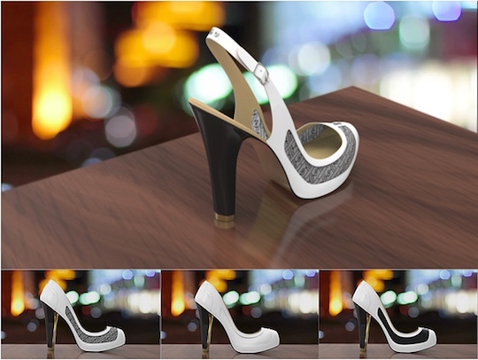
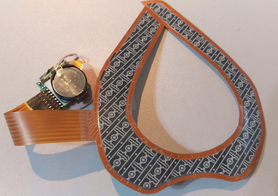
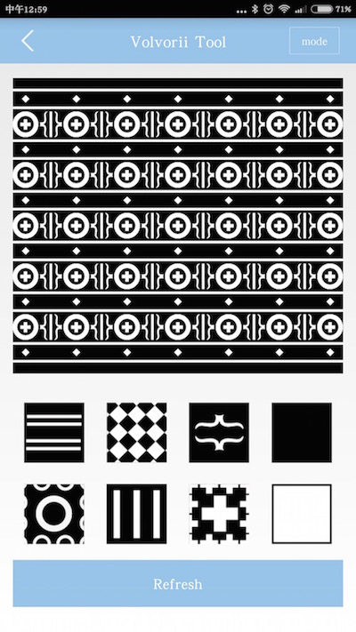

电子墨水是一种新型信息显示技术。像多数传统墨水一样，电子墨水和改变它图案的电路是可以打印到许多表面，从弯曲塑料、聚脂膜、纸到布。电子墨水在通电时改变图案，断电后会保留图案，不会褪色。
在这个充斥着由液晶、发光二极管等制造的显示屏的世界中，您也许不认为纸是一项革命性的显示技术，但中国人在公元105年改进造纸术永久地改变了世界的沟通方式。如果没有纸张，书籍可能仍在只有富人才买得起的丝绸卷轴上打印，使得读写成为一种稀有的技能。看看您的周围：一天中不与某种类型的纸接触几乎是不可能的。据英国国家造纸商会估计，今年全世界将消耗2.8亿吨纸，这相当于56万亿张信纸大小的9公斤证券纸。
电子墨水，这种又被称为电子纸的显示技术，有望进一步拓展人们获取和展示信息的手段。
有小伙伴做成了柔性的电子墨水屏，并将其用在了女性高跟鞋上。由于电子墨水屏可以变幻图案，可以让女性把一双鞋穿出多重感觉，并提出了“以不变应万变 • 一双鞋走天下”的口号。
电子墨水屏硬件如下图所示，它采用了柔性的显示材质，电路方面支持低功耗蓝牙、纽扣电池供电、无线充电等；
电子墨水屏配有手机APP，手机APP通过低功耗蓝牙设置屏幕的图案，预设了如下的图案：
用手机APP设置电子墨水屏的效果如下：
该项目已经在indiegogo上开启了众筹，详情请点击这里。
JUMA为上述高跟鞋的电子墨水屏提供了软硬件的技术实现，目前我们正在将这个技术应用到更多物品上，如眼镜、箱包、汽车内饰等。
硬件
请发邮件至hello@jumacc.com，客服人员会和您联系。